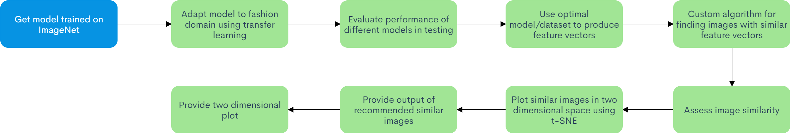

Project Proposal - Visual Recommendation System
Arzoo Irshad, Noah Meine, Jared VeerhoffFall 2020 ECE 4554/5554 Computer Vision: Course Project
Virginia Tech
Abstract
Many current visual recommendation systems do not allow a user to visualize the difference or similarity between images. In our project, we plan to implement our own visual recommendation system. We will allow a user to visualize the similarity between their input image and other images in two dimensional space. We will tailor our project to work with fashion items (clothes, brands, outfits), as there are many exciting applications for visual recommendation in the fashion/e-commerce domain.We plan to use a pre-trained model in image classification such as VGG-16 because of its strong performance in visual recognition. We will then implement transfer learning to optimize its performance with fashion items by using the DeepFashion and/or Fashion MNIST datasets. In order to quantify and assess image similarity, we will implement our own algorithm that uses the outputs of our retrained model as data. To perform a two deminsional visualization of image similarity, we will use t-SNE. We will deploy our project as a self-contained application. The application will take an input image and provide the user with recommended similar or complementary items, and a visual representation of how similar certain images are to the input image.
Problem Statement
Many visual search and recommendation systems perform well at providing a user with similar images to an input image, but they do not allow the user to visualize image similarity. We plan to implement a system that provides the user with a set of similar images, and a visualization of image similarity in two dimensional space.Project Goal
The goal of our project is to develop an application that allows the user to input a fashion related image and receive a list of similar items. We will also provide the user with a two dimensional visualization of image similarity between the input image, and some of the images in our database. Here is summary of the system inputs, outputs, and tools we plan to use and build upon:Tools
- VGG-16 model trained on ImageNet weights
- DeepFashion and/or Fashion MNIST datasets
- t-SNE for two dimensional visualization
Inputs
- A user provided JPEG image (url or possible image upload)
Outputs
- A list of recommended similar items
- A two dimensional visualization of image similarity
Approach -- Review Please
Here is a flowchart of the approach we plan to take to accomplish our project goals.

The technical approach we will follow begins with using a model such as VGG-16 that is pre-trained on the ImageNet dataset. We will then adapt this model to the fashion domain for our project using transfer learning. This allows us to fine-tune a model for the purposes of our project quickly. This procedure may even be accelerated by using a cloud computing service to generate the best results possible. We will then perform experiements on different models and select a configuration that best suits our desired performance.
We will use the selected model to produce feature vectors for a user specified input image, and implement a custom algorithm to find images with similar attributes. We will then assess similarity between images using these vectors, and plot them in two deminsional space using t-SNE. We will experiement with different metrics of image similarity to provide the user with a list of top recommendations of similar images, and a visualization of the image similarity.
Experiments and results
Provide details about the experimental set up (number of images/videos, number of datasets you experimented with, train/test split if you used machine learning algorithms, etc.). Describe the evaluation metrics you used to evaluate how well your approach is working. Include clear figures and tables, as well as illustrative qualitative examples if appropriate. Be sure to include obvious baselines to see if your approach is doing better than a naive approach (e.g. for classification accuracy, how well would a classifier do that made random decisions?). Also discuss any parameters of your algorithms, and tell us how you set the values of those parameters. You can also show us how the performance varies as you change those parameter values. Be sure to discuss any trends you see in your results, and explain why these trends make sense. Are the results as expected? Why?
Qualitative results
Show several visual examples of inputs/outputs of your system (success cases and failures) that help us better understand your approach.